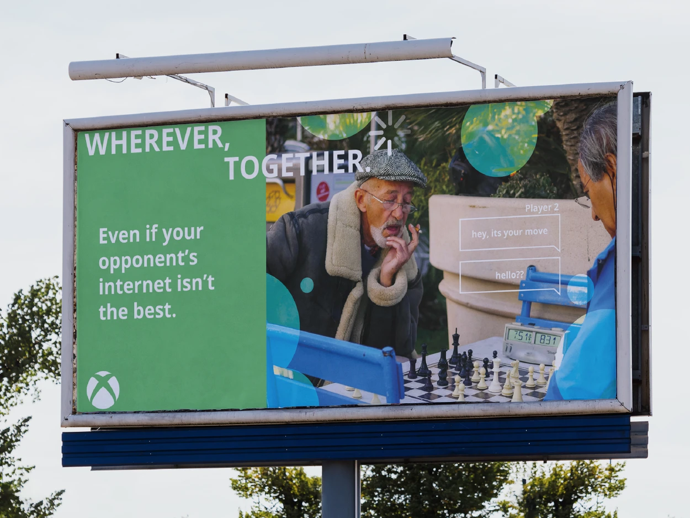
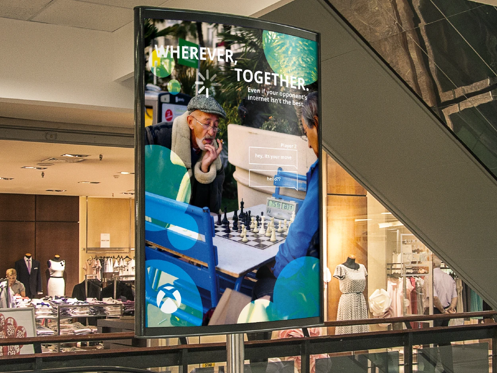
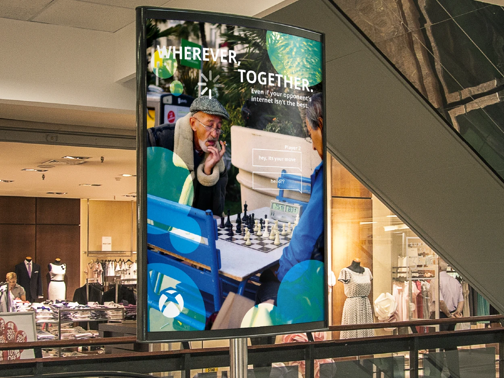
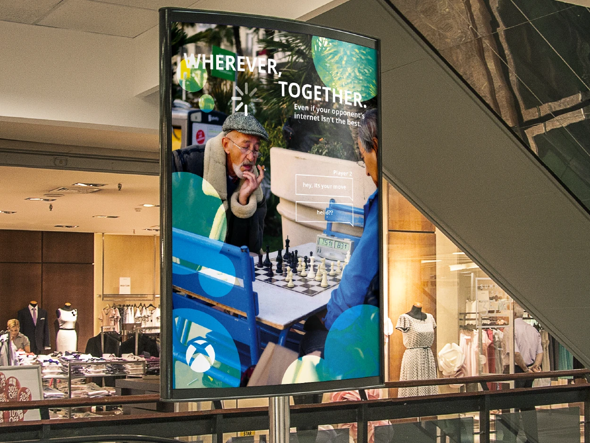

![A mockup of three portrait posters in a line on a wall. The middle poster shows a person following after Steve from Minecraft, complaining how long they've been running. At the top is the line: 'Wherever, Together. Even if your friend drags you 5000 blocks to find the perfect base location.' The left and right posters show two friends physically separated. They're texting each other, asking where the other is. The line: 'Wherever, Together. Even if your teammate is halfway across the map.' is shown on both posters.](assets/D&AD-16.webp) 


D&AD New Blood Brief
The Xbox D&AD New Blood brief was to create a copy-led campaign that wanted to convey to gamers that they can play anywhere with Xbox.
With my campaign, I connected real life with games, showing how we can see similarities in our day to day outside the house, not just when we're inside on a console. Someone might lose their friend on the train, or in a mapped out stage.